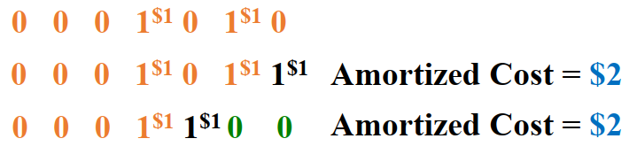
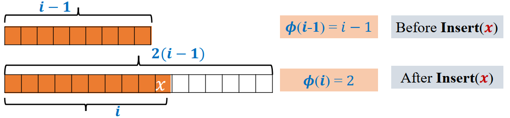

平摊分析笔记
平摊分析（amortized analysis）是用于分析一系列操作的平均花费的方法。在一些情况下，采用最坏的单次操作表现来衡量整体情况是不合适的，这时就需要对其进行平摊分析。
平摊分析不涉及概率。也要将其与平均情况分析（average-case analysis）区分开来。
平摊分析保证的是最坏情况下，单次操作的平均表现。
聚集法 Aggregate method
计算\(n\)个操作的时间复杂度上限\(T(n)\)，平摊\(T(n)\)至每一个操作，每一个操作的平摊成本是\(T(n)/n\)。
考虑一个二进制计数器：
1 | Increment(A) |
| Ctr | A[3] | A[2] | A[1] | A[0] | Cost | Total Cost |
|---|---|---|---|---|---|---|
| 0 | 0 | 0 | 0 | 0 | 0 | 0 |
| 1 | 0 | 0 | 0 | 1 | 1 | 1 |
| 2 | 0 | 0 | 1 | 0 | 2 | 3 |
| 3 | 0 | 0 | 1 | 1 | 1 | 4 |
| 4 | 0 | 1 | 0 | 0 | 3 | 7 |
| 5 | 0 | 1 | 0 | 1 | 1 | 8 |
| 6 | 0 | 1 | 1 | 0 | 2 | 10 |
| 7 | 0 | 1 | 1 | 1 | 1 | 11 |
| 8 | 1 | 0 | 0 | 0 | 4 | 15 |
| 9 | 1 | 0 | 0 | 1 | 1 | 16 |
| 10 | 1 | 0 | 1 | 0 | 2 | 18 |
| 11 | 1 | 0 | 1 | 1 | 1 | 19 |
\(T(n)\)是在\(n\)次增加中，数字反转的总次数。令\(f(i)\)等于在第\(i\)位的数字反转次数。那么显然\(T(n)=\sum_{i=0}^{k-1}f(i)\)。
通过观察可以发现：
- \(f(0)=n\)
- \(f(1)=n/2\)
- \(f(2)=n/4\)
- \(f(i)=n/2^i\)
由此可以得到\(T(n)=n\sum_{i=0}^{k-1}2^{-i}<2n\)。
那么，每一次增加的平均花费，也就是平摊成本，等于\(\frac{T(n)}{n}<2=O(1)\)。
记账法 Accounting (Banker’s) method
对第\(i\)次操作收取一个平摊成本\(c(i)\)（想象成一笔钱）。这笔钱会在这次操作中被消耗一部分，而没有被立即消耗的则会被存到银行中，供之后的操作使用。基本想法就是对“便宜”的操作收取额外的费用，多出来的部分被用于支付之后的“昂贵”操作。
注意：银行存款在任何时候都不能为负数。
还是以二进制计数器作为例子。
首先分析“昂贵”的情况：从011111到100000，总反转次数是6，其中5次是1→0，只有1次是0→1。也就是说，这次增加之所以“昂贵”，是因为在1→0上花费的太多。
那么，对每一个0→1收取￥2，其中￥1用于该操作本身，而另外￥1则被存入银行。不难看出，在任何时候，计数器中的“1”都在银行有￥1的存款。这存下来的￥1可用于支付1→0的操作，那么1→0本身的花费就被消除了。

由此可得出结论，每一次增加的平摊成本等于\(2\)，即\(O(1)\)。而\(n\)次增加的平摊成本等于\(2n\)，即\(O(n)\)。
练习：
Question
Consider a data structure that is based on a queue with four operations:
– ENQUEUE(a): Add the element a into the queue
– DEQUEUE(): Dequeue a single element from the queue
– DELETE(k): Dequeue k elements from the queue
– ADD(A): Enqueue all elements in AClaim: ENQUEUE, DEQUEUE and DELETE run in amortized O(1) time while ADD runs in amortized O(|A|) time.
Using accounting method, can you show that these time complexities are correct?
Solution
ENQUEUE(a) is charged $2,
– $1 is for immediate insert
– $1 is stored in the bank for the future dequeue operation of aDEQUEUE() is charged $0
– The element is deleted using $1 from the bankDELETE(k) is charged $0
– The k elements are deleted using $k from the bankADD(A) is charged $(2|A|)
– There are |A| enqueue. Each enqueue is charged $2
• $1 is for immediate insert
• $1 is stored in the bank for the future dequeue operationAfter the insertion of element x (in ENQUEUE and ADD operations), $1 is associated to x in the bank. When we dequeue the element x (in DEQUEUE and DELETE operations), we can use $1 from the bank for dequeue of x. Hence, the bank never goes negative.
势能法 Potential Method
定义：
\(\phi\)为与算法（或数据结构）相关联的势能函数（potential function）。
\(\phi(i)\)为第\(i\)次操作后的势能。
- \(\phi(0)=0\)
- \(\phi(i)\geq0\ \mbox{for all}\ i\)
那么，第\(i\)次操作的平摊成本等于第\(i\)次操作的实际成本加上\((\phi(i)-\phi(i-1))\)（\(\triangle\phi_i\) 势能差）。
试着选择一个合适的\(\phi\)，使得对于高成本的操作，\(\triangle\phi_i\)是负值，从而抵消或减少实际成本的影响。仔细观察并找出高成本操作中减少的量，这将有助于\(\phi\)的选择。
还是以二进制计数器作为例子。
从011111到100000，不难发现计数器中“1”的数量减少了。因此，让\(\phi(i)\)等于经过第\(i\)次增加后计数器中“1”的数量。可得结论如下，其中\(l_i\)是计数器中由“1”组成的最长后缀长度。
| 第\(i\)次操作的实际成本 | \(\triangle\phi_i\) | 第\(i\)次操作的平摊成本 |
|---|---|---|
| \(l_i+1\) | \(-l_i+1\) | \(2\) |
练习：
Question
2
3
4
5
6
7
8
9
10
11
if (n=0)
T←createTable(1)
else
if (n=size(T))
T'←createTable(2n)
copy(T,T')
free(T)
T←T'
insert x into T
n←n+1Dynamic tables:
Whenever the table overflows, “grow” it by allocating (via malloc or new) a new, larger table. Move all items from the old table into the new one, and free the storage for the old table.
Using Potential method show that the amortized cost of each insertion operation is O(1).
Solution
\(\phi(i)=2i-\mathrm{size}(T)\)

Operation Insert(x) Actual Cost \(\triangle\phi_i\) Amortized Cost Case 1: when table is not full 1 2 3 Case 2: when table is already full i 3-i 3 Amortized cost of each insertion operation is 3 which is O(1).
 wechat
wechat alipay
alipay